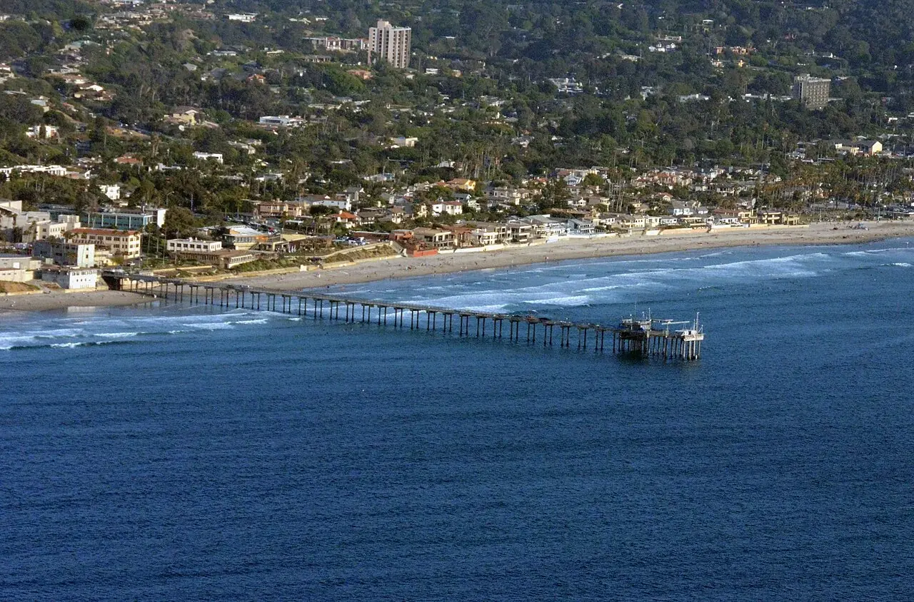

La Jolla Shores
San Diego, États-Unis · kayak, surf, plongée

À San Diego, La Jolla Shores longe un quartier de bord de mer jusqu’aux abords du ponton Scripps. Kayak, surf et plongée se préparent depuis les opérateurs du secteur.
- Lieu
- San Diego, États-Unis
- Niveau
- Variable selon les conditions
- Activités
- kayak, surf, plongée
- Type d'eau
- Mer / océan
- Coordonnées
- 32.86, -117.26 (position approximative du secteur)
Ouvrir dans Ocean Buddy Télécharger sur l'App Store
Source : Wikipédia · géographie du lieu.